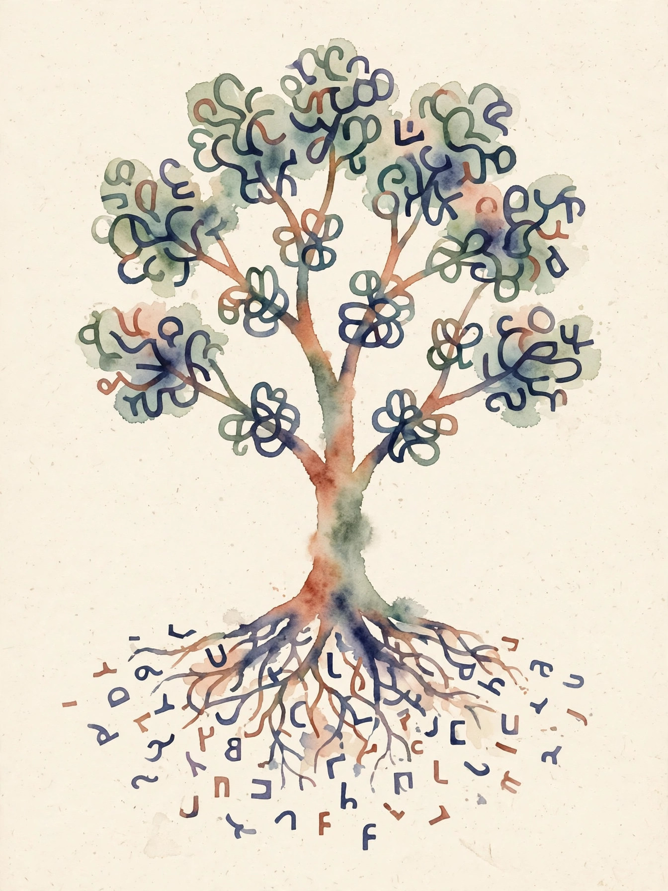
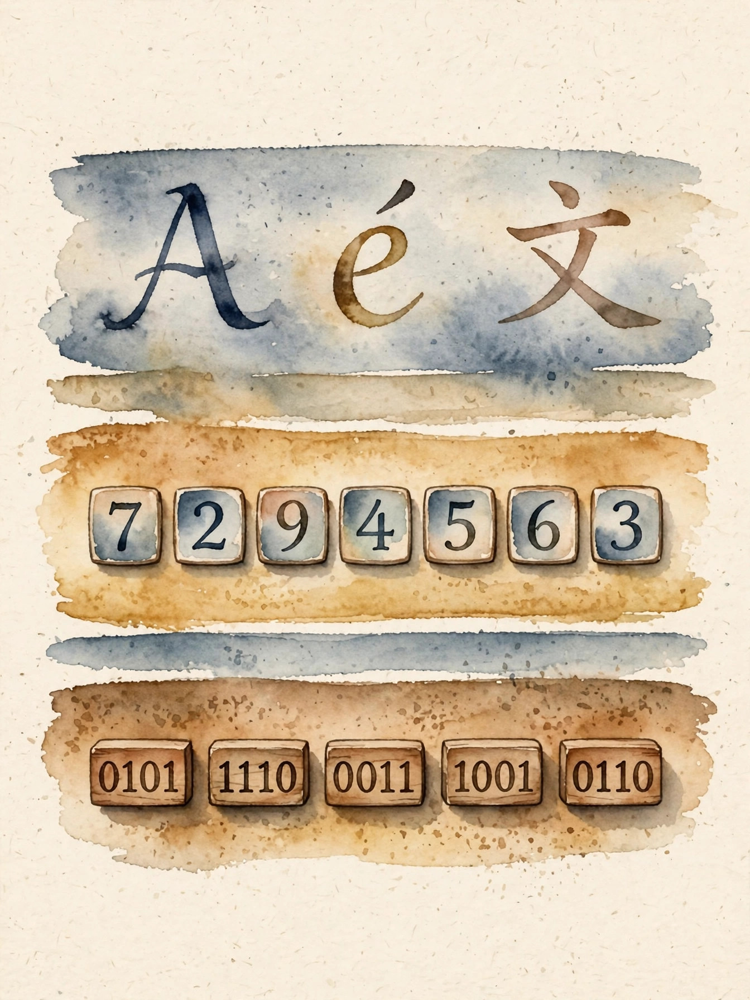
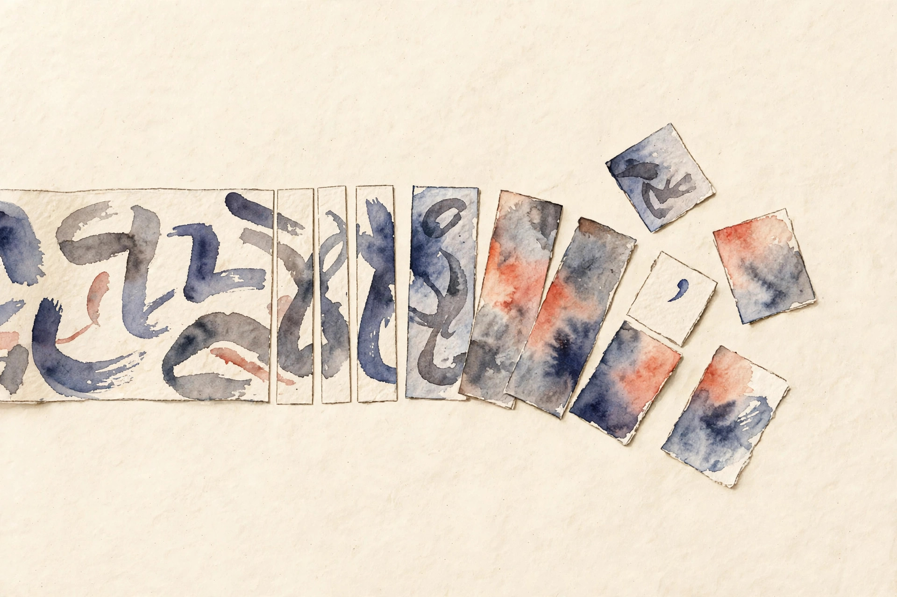

Pilot companion · narrated from the lesson document
A model never reads text. It reads integers. This companion walks the full arc of Unit 01: from characters to bytes, from bytes to subwords, and from a working tokenizer to the invariants that keep it honest.
From the lesson The idea, and every number beside it, comes from the cited section of u01_tokenization.md. The phrasing is the companion’s.
Illustration Invented by the companion: an analogy, a toy with made-up values, or a what-if. Never lecture content.
companion Companion voice: the idea above the tag is from the lesson. The generalization below it is the companion’s.
Provenance: no full lecture transcript exists for this session. The page narrates the lesson document content/v2/cs336/lessons/u01_tokenization.md, not a video. Most leaves carry claim class REQUESTED-BRANCH. C03 and C04 carry partial OFFICIAL-SOURCE via SRC-03 (BPE training and encoding functions reported in lecture_01.py).

Section 1 · C01
From the lessonC01 §2, 3
A model never sees characters. It sees integers derived from bytes. Three layers sit between human text and model input. Characters are what humans read. Code points are the numbers Unicode assigns to characters, written U+0041 for “A”. Bytes are what storage holds.
UTF-8 is the fixed bridge from code points to bytes. Code points below U+0080 become one byte. Larger code points become two, three, or four bytes. The first byte of a multi-byte sequence states the total length, so a decoder walks bytes left to right with no ambiguity.
From the lessonC01 §5
The rule, in full. U+0000 to U+007F: one byte, 0xxxxxxx. U+0080 to U+07FF: two bytes, 110xxxxx 10xxxxxx. U+0800 to U+FFFF: three bytes, 1110xxxx 10xxxxxx 10xxxxxx. U+10000 to U+10FFFF: four bytes, 11110xxx plus three continuation bytes. The x bits are the code point bits, big end first.
Type any character below. The widget applies the lesson’s rule and shows the code point and the UTF-8 bytes. It is the C01 rule running live, not a simulation of it.
From the lessonC01 §5, 6 Live UTF-8 encoder: the four lead-byte patterns, applied to your input.
From the lessonC01 §6
The lesson’s computed table, executed 2026-10-06 in CPython. Read it as the audit row for the rule above.
| Character | Code point | UTF-8 bytes | Length |
|---|---|---|---|
A | U+0041 | [65] | 1 byte |
é | U+00E9 | [195, 169] | 2 bytes |
€ | U+20AC | [226, 130, 172] | 3 bytes |
中 | U+4E2D | [228, 184, 173] | 3 bytes |
😀 | U+1F600 | [240, 159, 152, 128] | 4 bytes |
visuals/compute_u01.py. “Aé” is two characters, code points U+0041 and U+00E9, and three UTF-8 bytes [65, 195, 169].From the lessonC01 §8
Strictness matters. A lone continuation byte such as [0x80] has no lead byte. The overlong form of “A”, [0xC1, 0x81], cheats the length rule. A strict decoder raises on both instead of guessing. Silent repair with U+FFFD breaks the roundtrip invariant of C06, and the failure stays invisible until a hash or id comparison mismatches.

Section 2 · C02
From the lessonC02 §2, 3
Why not feed characters or words directly? Take the toy corpus “low lower”. Character tokens give l, o, w, space, l, o, w, e, r: nine tokens. Word tokens give “low” and “lower”: two tokens, but an unseen word like “lowest” has no id. Byte tokens give each UTF-8 byte an id: 256 ids cover everything, but sequences grow long.
One line holds the whole section. A tokenizer trades vocabulary size against sequence length. Characters: tiny vocab, long sequences. Words: short sequences, huge vocab with an unknown-word hole. Bytes: fixed tiny vocab, no hole, longest sequences. BPE sits between bytes and words.
| Level | Toy corpus “low lower newest” | Vocab size | Weakness |
|---|---|---|---|
| Character | “low” → 3 ids | 9 · {l,o,w,space,e,r,n,s,t} | Long sequences |
| Word | “lowest” → [UNK] | 4, incl. UNK | Unseen words map to UNK |
| Byte | each UTF-8 byte is one id | 256, fixed | Longest sequences |
A fixed vocabulary on an open world fails silently. The word tokenizer maps “lowest” to UNK and deletes its parts. On code, the identifier my_var_2 becomes UNK and the model learns nothing about its pieces.
From the lessonC02 §9
The choice also sets the compute bill. Sequence length multiplies attention cost quadratically later (U03). Word vocabularies grow without bound on web text. Subword methods win modern practice because they remove the UNK hole while they keep sequences short.
Section 3 · C03
From the lessonC03 §2, 3
How do we get short sequences with no UNK hole? Start from bytes or characters and glue the most frequent neighboring pair, again and again. The merge list is ordered. Encoding applies merges in that order, greedily, left to right. The vocabulary is the base set plus one entry per merge.
From the lessonC03 §5
The training loop, in order. Count all adjacent pairs across the corpus, weighted by word frequency. Pick the pair with max count. Ties break by a fixed rule. Record the merge. Rewrite every word, replacing the pair with the joined symbol. Repeat until the vocabulary reaches the target size. To encode: split text into words, start from base symbols, apply merges in rank order wherever they match, until no merge applies.
Word boundaries are marked with [[EOW]] so merges never cross words unless the design allows it.
From the lessonC03 §6 Merge-order stepper. Corpus: {low: 2, lower: 1, lowest: 1, new: 1, newer: 1}. Step through the four merges the lesson computes. Pair counts are weighted by word frequency.
| Rank | Pair | Count | Status |
|---|
Corpus state after this step:
From the lessonC03 §6
Final splits after the four merges: “low” stays whole (x2). “lower” becomes low + e + r[[EOW]]. “lowest” becomes low + e + s + t + [[EOW]]. “new” becomes ne + w + [[EOW]]. “newer” becomes ne + w + e + r[[EOW]]. Vocabulary size grows by exactly one per merge, and the same corpus with the same tie-break gives the same merge list twice: determinism is testable.
visuals/compute_u01.py, executed 2026-10-06.Determinism is a design choice. Two runs that break ties differently produce two vocabularies, token ids shift, and a trained model misreads its input.
Illustration Live BPE toy. A tiny JavaScript BPE runs the lesson’s four merges over a fixed toy vocabulary, fully client-side. Values are illustrative, the merge order and mechanism follow C03.
Toy alphabet: lowercase letters and space. Other characters pass through as single symbols.
From the lessonC03 §10, §12
Why BPE and not its cousins? WordPiece picks merges by likelihood gain, not raw count. Unigram LM starts large and prunes by loss. BPE wins on simplicity and speed of training. Vocabulary compatibility matters more than the algorithm: choose the method your downstream model was built for. The idea itself is older than neural nets. Gage described it as a compression method in 1994, and Sennrich et al. brought it to translation in 2016 for rare words.
Section 4 · C04
From the lessonC04 §2, 3
Why does “do not” contracted as don’t tokenize as “don” + “’t” in many models? Because raw text meets a regex before BPE ever runs. Pretokenization cuts text into chunks, and BPE merges run inside each chunk only. The regex therefore decides which merges are even possible: a merge can never join text from two different pretokens.
From the lessonC04 §5
The GPT-2 style pattern is an alternation tried left to right at each position. Contractions first (“’s”, “’t” and friends), then an optional space plus letters, then an optional space plus digits, then punctuation runs, then whitespace runs. Because alternatives are ordered, “’t” matches before a bare “t” would.
From the lessonC04 §6 Cut-mark demo. The input string and the nine pretokens the lesson computes. Press the button to place the regex cuts.
Hello, world! 123 Testing... don’t
Coverage check from the lab: the pretokens join back to the exact input. Leading spaces stay attached to the following word piece. Punctuation forms its own pretokens.

Early pipeline stages constrain every later stage. A regex that splits digits from letters destroys numeric tokens: the model can never learn “123” as one unit.
From the lessonC04 §10
The alternative is no pretokenization. Raw BPE on the full string allows cross-word merges and slightly better compression, but it merges across languages and scripts in surprising ways. The regex wins for control and multilingual sanity. Drop it only for byte-level models that want maximal sharing.
Section 5 · C05
From the lessonC05 §2, 3
What stops the tokenizer from splitting “<|endoftext|>” into pieces? Registration. Special tokens are fenced-off substrings. The encoder splits the input on them first, runs normal BPE on the gaps, and maps each fenced substring to its reserved id directly. They never enter pair counting or merging.
From the lessonC05 §6 Toy fence diagram. Toy vocab: base ids 0 to 255, merges add 256 and up, EOT = 50000. With the fence registered, “hi<|endoftext|>” encodes to [ids(“hi”), 50000]. Without it, the literal string becomes 8 or more piece ids and the control meaning is lost.
With fence
Without fence
Pieces of the literal string, 8+ ids, no 50000. Lab-verified on the toy encoder.
From the lessonC05 §5, §11
The mechanism: split the input on the set of special strings, longest match first. Encode each plain span with the normal pipeline. Emit the reserved id for each special span. The failure case is adversarial text. A help page that says “type <|endoftext|> to quit” gets its fence treated as control, and the model’s context truncates at that point. The assumption that fences never appear in content breaks on instructional text, so escaping or filtering is required.
Section 6 · C06
From the lessonC06 §2, 3
When is it safe to tokenize, process ids, and decode back? Three invariants answer. I1: decode(encode(s)) == s for all valid strings s. I2: encode is deterministic. Same input, same ids. I3: ids decode to the byte sequence the encoder consumed, with no silent normalization. I1 is the headline. I2 and I3 are what make I1 hold in pipelines.
From the lessonC06 §5
I1 holds when every stage is injective on its domain. UTF-8 encode is injective. Pretokenization partitions the string: the parts join back to the whole. BPE encoding is a deterministic rewrite. Specials are fenced. Any lossy stage breaks injectivity and with it I1: a normalizer that lowercases means “Café” no longer roundtrips.
Illustration Roundtrip probe. This toy runs the lesson’s four-merge BPE forward and back on your text and checks decode(encode(s)) == s. The invariant is from C06. The tiny vocab is the companion’s.
Roundtrip invariants are non-negotiable. One lowercasing normalizer broke 163 of 200 strings, and a Unicode NFKC step turns the single ligature “fi” into two characters “fi”, so hashes mismatch and deduplication later treats one document as two.
Section 7 · C07
From the lessonC07 §2, 3
Can we tokenize each network packet as it arrives? Take “unhappy” split as “unha” + “ppy”. Encoded whole, BPE may merge across the a|p boundary. Encoded per chunk, it cannot. The two id sequences differ, so naive streaming changes model input.
From the lessonC07 §5
The safe rule: hold back everything from the last word boundary and encode the complete words before it. Merges never cross the end-of-word sentinel, so a whole word encodes exactly as in whole-string encoding and the emitted prefix is final. At stream end, flush the carry. Keep a carry buffer of the unemitted tail. Emit only complete words.
Emit only what the future cannot change. A chunk edge can fall inside a word, where merges are still undecided. The carry buffer is the proof that the emitted prefix is final.
From the lessonC07 §10, 11
The alternative is re-encoding from scratch on every chunk: simple and always correct, but O(n²) on long streams. One caution: a contraction-aware regex can still mis-split when the apostrophe arrives in a later chunk. Character horizons do not suffice where rules look at pattern context. Hold back to the last regex-safe boundary instead.
Section 8 · C08
From the lessonC08 §2, 3
Why not a one-million vocabulary for maximum compression? On the lesson’s repeated-sentence corpus, character level gives 3.89 tokens per word and a small BPE gives about 1.30. Bigger vocabularies compress more. But the embedding matrix and the output head both grow with V: V × d rows each. And tail tokens see few updates, so they stay undertrained.
From the lessonC08 §5
Doubling V roughly halves the marginal fertility gain. Frequent words are already one token, so the returns diminish. Parameter cost grows linearly in V. The output softmax costs O(V × d) per position, so a very large V taxes every training step directly.
Tokenization is lossy compression with a budget. Vocabulary size buys compression and pays in parameters, in per-step softmax cost, and in rare tokens that never get enough updates.
From the lessonC08 §10
The working bands: byte level at V = 256 for tiny models or minimal vocabularies. 32k to 64k for English-centric models. 100k and up for multilingual models where many scripts need coverage. Fertility numbers only transfer when the training corpus represents the deployment mix.
Section 9 · C09
From the lessonC09 §2, 3
The model trained fine. Why does it babble in production? Suppose training used pretokenizer regex R1 with 50k merges, and inference loads regex R2 with 32k merges. The same string maps to different ids, so the model reads garbage.
The tokenizer is part of the model artifact. Four mismatch classes exist: different vocabulary or merges, different regex or normalization, different special tokens, different byte-fallback or error handling. Any one of them silently shifts every id. Because ids are the model’s input alphabet, a shifted map equals permuted inputs.
From the lessonC09 §6 One changed component is enough. Encode “Testing 123” with the C04 regex versus a regex that splits digits from letters: 4 pretokens versus 5, and the id sequences differ in segmentation. Exact ids are in the lab key.
C04 regex · 4 pretokens
Digit-splitting regex · 5 pretokens
Note: the chips show the actual cuts the C04 pattern makes on “Testing 123” (2 and 4 pieces). The “4 versus 5” labels quote the lesson’s C09 §6 figures.
The tokenizer is part of the model. Ship it, version it, and hash it with the weights, or a config drift will look exactly like a model quality problem.
From the lessonC09 §7, §10
The defense is a config check at load. Hash the merge list. Compare regex source strings, special maps, and normalization flags. Raise on any difference. It runs once at load time, so it costs nothing per request. Store the tokenizer inside the checkpoint directory, or in a shared registry when many models share one tokenizer. Either way, hash and verify at load.
Section 10 · C10
From the lessonC10 §2, 3
Why does the same model cost more per word in some languages? Scripts whose characters take more bytes start further from good compression. A byte-started BPE needs more merges to cover a 3-byte character, so at fixed V those scripts get worse compression. For numbers, the pretokenizer decides the damage: splitting digits apart turns “123” into three tokens and hides place value.
From the lessonC10 §5, 6
BPE merges are frequency-driven on the training mix. A script rare in training gets few dedicated merges, so its text stays near byte level: up to 4 tokens per character for some scripts. A digit-splitting regex turns “2026” into 4 tokens. A digit-keeping regex keeps it splittable into fewer.
From the lessonC10 §9, §11
This is a fairness and cost issue, not just a quality issue. Longer sequences for some scripts mean higher attention cost and higher per-word API bills for those users. And a model trained with digit-splitting does arithmetic on “123+456” as 9 tokens with no token for “12” or “23”. Place-value patterns must be relearned from scratch per position.
Fertility is script-dependent. A metric averaged on English hides another population’s bill.
Section 11 · C11
From the lessonC11 §2, 4
What if the vocabulary were just 256 bytes? “hi” becomes [104, 105]. No training, no UNK, no merge table. Bytes-first removes the tokenizer as a learned component, and the model must learn segmentation itself. This shifts work from preprocessing into the network.
With V = 256 there is no vocabulary to learn and no language-specific bias: every script and every byte sequence is representable. The model pays in sequence length, which multiplies attention FLOPs by the square of the length multiplier and stretches the context window.
Complexity does not vanish. It moves. Delete the vocabulary and the network pays in sequence length, in quadratic attention, and in context window.
From the lessonC11 §10, §12
BPE stays the default for standard transformers. Bytes-first fits research on tokenizer-free models and heavily multilingual settings where BPE bias hurts. Choose bytes when tokenizer bias is the research question, not for production efficiency on vanilla transformers. Readings: the ByT5 and CANINE papers for byte-level architectures.
Section 12 · C12
From the lessonC12 §2, 3
Tokenization is “fast”, so why does data loading stall? Encode time has three parts: regex time, merge time, and Python overhead. On English text the regex usually dominates. On tiny strings the per-call overhead dominates. Measure before optimizing.
From the lessonC12 §5, 6
The method: fix the input and tokenizer, then warm up. Time N repeats with a high-resolution clock. Split the pipeline into regex-only versus merges-only to attribute. Report the median, not the mean, to resist outliers. One data point from the lesson: a trivial byte scan of 60 KB of ASCII took 0.0009 s, or 67.5 MB/s. Exact BPE numbers land in the lab key because they are machine-specific.
Measure before you optimize. The risk is that you tune the wrong stage, and attribution prevents that.
Section 13 · Synthesis
From the lessonC02 §3, C08 §3, C09 §3
The arc, end to end. Text must become numbers, and bytes are the honest base (C01). Characters and words both fail as direct inputs, one on length and one on the UNK hole (C02). BPE glues frequent pairs from bytes upward, with an ordered merge list and a fixed tie-break (C03). A regex cuts the text first and fences what merges may touch (C04). Control strings get fenced ids outside the whole system (C05).
Three invariants guard the pipeline: exact roundtrip, determinism, byte fidelity (C06). Streams hold back to the last safe boundary (C07). Vocabulary size buys compression and pays in parameters and tail risk (C08). The tokenizer ships with the model, hashed and verified, or inference silently reads a different alphabet (C09). Fertility varies by script and by digit policy (C10). Bytes-first deletes the vocabulary and moves its cost into the network (C11). And when the pipeline feels slow, the profile decides what to fix (C12).
From the lesson Where the unit points next, in the lesson’s own forward links: U03 prices attention quadratically in sequence length, which is why the tokenizer sets the compute bill. U05 reads the loss over these ids. U14’s deduplication trusts byte-exact roundtrips. Assignment 1 asks you to build the BPE tokenizer yourself: the toy on this page is the shape of that assignment, not a substitute for it.
Wisdom index
Each nugget states the idea in plain words, why it matters, and the transferable principle. Every one is anchored to its lesson section.